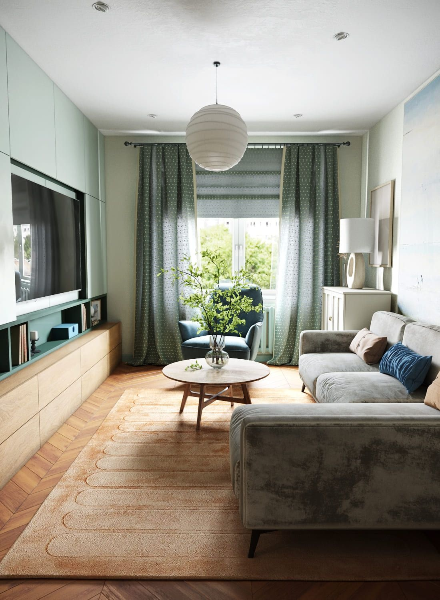

Юлиана Шлегель · КалининградЮлиана Шлегель.
Юлиана Шлегель.
Дизайн интерьеров.
Авторский дизайн интерьеров в Калининграде. От идеи и планировки до комплектации и сопровождения реализации.
Обсудить интерьер
ПРИМЕРЫ РЕШЕНИЙИнтерьеры.
Интерьеры.
В разных решениях.
Цвет, мебель и отделка задают настроение дома. Рассмотрите проекты и расскажите, какие пространства и сочетания близки именно вам.
Обсудить интерьер